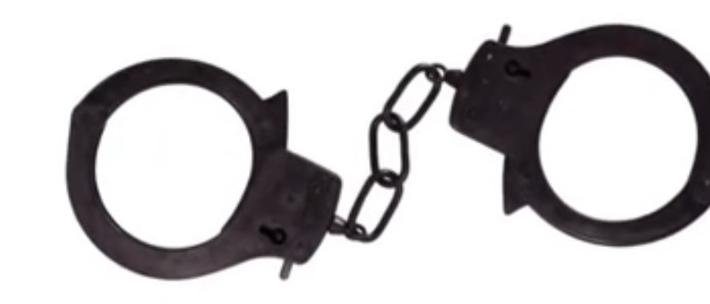
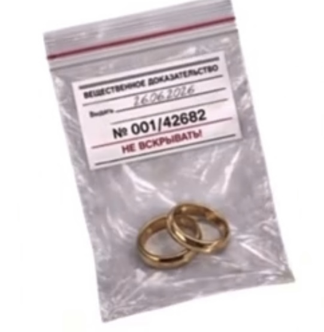

ПРОТОКОЛ
об административном задержании
об административном задержании
Я, уполномоченное лицо, гражданин:
Черноволов Даниил Евгеньевич
Действуя на основании личных намерений,
устойчивых чувств и окончательного решения
о создании семьи, произвел задержание гражданки:
Ермолаева Диана Михайловна
Действуя по предварительному взаимному согласию,
вступили в сговор с целью создания семьи,
совместного ведения хозяйства
и пожизненного союза.

В ходе проверки выявлены следующие обстоятельства:
1. незаконное завладение сердцем;
2. систематическое присутствие в мыслях;
3. планирование совместного будущего;
4. намерение обменяться кольцами;
5. отсутствие сопротивления задержанию.
2. систематическое присутствие в мыслях;
3. планирование совместного будущего;
4. намерение обменяться кольцами;
5. отсутствие сопротивления задержанию.


I. МЕСТО ПРОВЕДЕНИЯ ПРОЦЕССУАЛЬНЫХ ДЕЙСТВИЙ
Торжественное празднование задержания состоится по адресу:
г.Степногорск,
ул.Парковая, 2мкр, д.79
ресторан Green Which
г.Степногорск,
ул.Парковая, 2мкр, д.79
ресторан Green Which
II. ПРОГРАММА ПРОЦЕССУАЛЬНЫХ ДЕЙСТВИЙ
18:00 — сбор понятых
18:20 — официальное подтверждение задержания и обмен вещественными доказательствами — кольца, 2шт
Банкет в честь успешного завершения операции, далее — свободные манёвры до полной капитуляции усталости
18:20 — официальное подтверждение задержания и обмен вещественными доказательствами — кольца, 2шт
Банкет в честь успешного завершения операции, далее — свободные манёвры до полной капитуляции усталости

III. ФОРМА ОДЕЖДЫ ДЛЯ ПОНЯТЫХ
В целях соблюдения праздничной дисциплины
предписывается:
стиль классический / нарядный,
цветовая директива — от светлых до темных оттенков.
стиль классический / нарядный,
цветовая директива — от светлых до темных оттенков.
IV. ПОРЯДОК ПЕРЕДАЧИ МАТЕРИАЛЬНЫХ ДОКАЗАТЕЛЬСТВ
В ходе предварительной проверки установлено,
что молодая семья обеспечена предметами быта.
В связи с этим разрешается передача подарков исключительно в денежной форме.
В связи с этим разрешается передача подарков исключительно в денежной форме.
Средства будут направлены
на развитие совместной стратегии
и укрепление материально-технической базы семьи.
V. ДОПОЛНИТЕЛЬНЫЕ РАСПОРЯЖЕНИЯ
Понятым рекомендуется прибыть вовремя,
в установленном дресс-кодом виде
и в полной готовности
к активному участию
в праздничных процессуальных действиях.
VI. ЯВКА ПОНЯТОГО
Для участия в процессуальных действиях
просим подтвердить личное присутствие
до 31.07.2026
Настоящим подтверждается готовность лично
присутствовать при приведении приговора
в исполнение и разделить один из важнейших
моментов в жизни сторон.
Стороны дела будут искренне рады видеть указанного понятого в числе свидетелей создания новой семьи и рассчитывают на активное участие в праздничных действиях и веселье без ограничений.
Неявка рассматривается как уклонение от участия в историческом событии.
Стороны дела будут искренне рады видеть указанного понятого в числе свидетелей создания новой семьи и рассчитывают на активное участие в праздничных действиях и веселье без ограничений.
Неявка рассматривается как уклонение от участия в историческом событии.
VII. ЗАКЛЮЧЕНИЕ
Настоящий протокол вступает в силу
с момента официального объявления
граждан мужем и женой.